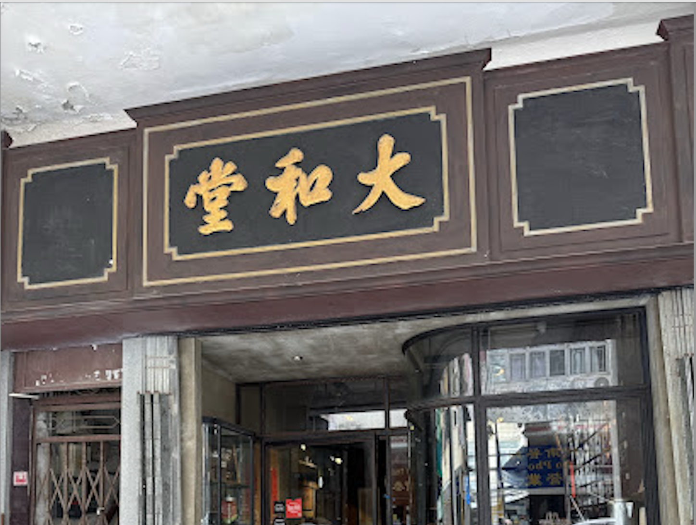
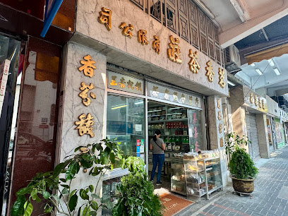
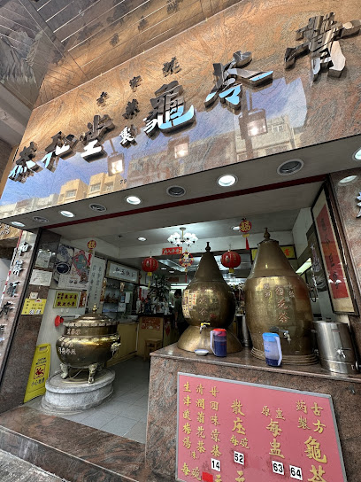
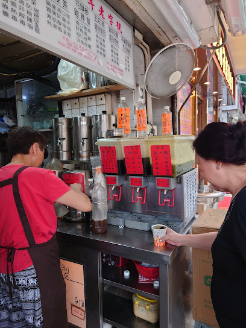
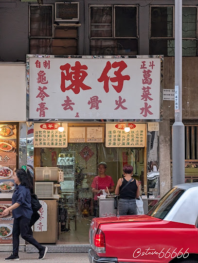
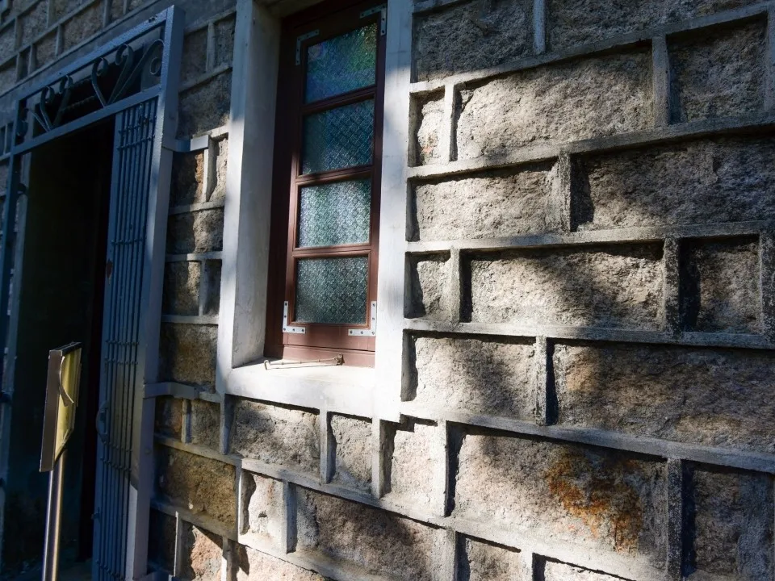

Kowloon: Beyond the myth:The Walled City of Kowloon
Introduction
About this WebsiteTravel Guide
Kowloon Walled City Park Kowloon Walled City Exhibition Nearby Food Spots(1) Nearby Food Spots(2) Kowloon City attractions Derivative Artworksothers
Contact Us
Kowloon Walled City Park and Nearby Food Spots(1)
Table of contents
- Coffee
- 1. Dai Wo Tong Cafe — Century‑old Chinese medicine shop converted into a cafe
- 2. Blossom — Popular specialty coffee shop
- 3. Stone House Cafe — Heritage coffee and diner
- Tea and Herbal Drinks
- 4. Ming Heung Tea Shop — Traditional tea roaster
- 5. Kung Wo Tong — Century‑old herbal tea house
- 6. Chun Chun Tong Herbal Tea Shop & Chan’s Kudzu Water and Guilinggao Specialist
Coffee
Dai Wo Tong Cafe — Century‑old Chinese medicine shop converted into a cafe

Kowloon City’s Dai Wo Tong Cafe occupies a nostalgic space that used to be the nearly century‑old Chinese medicine shop Dai Wo Tong Ginseng & Antler. The prewar tong lau is a typical Guangzhou‑style arcade building and bears witness to the area’s history. After adaptive reuse, the cafe preserved historical features such as the multi‑drawer cabinet, large wooden signboards, and old iron shutters. Guests can enjoy coffee and fusion light dishes—eggs Benedict on toast, cheesy spicy meat‑sauce hot dog, egg‑waffle fried chicken, and red‑date cheesecake—while soaking up the neighbourhood’s old‑world charm.
| Address | G/F, 24 Nga Tsin Long Road, Kowloon City |
| Opening hours | 08:00–17:30 (closed Mondays)td> |
| How to get there | ~1 minute walk from MTR Sung Wong Toi Station Exit B3 |
Blossom — Popular specialty coffee shop
Blossom is known for its signature molten tiramisu, which blends rich coffee aroma, a hint of liqueur, and creamy cheese and egg notes for a delicate, layered taste. The cafe’s dining space is comfortable and offers international dishes including all‑day breakfast, pasta, and Japanese set meals. The owner sources beans from five origins and offers multiple brew methods—pour‑over, siphon, and espresso—with siphon brew especially popular.
| Address | G/F, 45 Nam Kok Road, Kowloon City | |
| Opening hours | Mon & Sun 08:00–18:00; Tue–Sat 08:00–23:00 | |
| How to get there | ~2 minutes walk from MTR Sung Wong Toi Station Exit B3 |
Stone House Cafe — Heritage coffee and diner

Inside the revitalised Grade‑III historic Stone House, this nostalgic coffee‑and‑ice‑room is decorated with retro enamel plates and preserved patterned floor tiles. The cafe offers outdoor seating and an upstairs exhibition of squatter‑era displays and childhood toys (marbles, animal chess, tangram), evoking childhood memories. Operated as a social enterprise, Stone House hires youth, people with intellectual disabilities, and seniors, and partners with special schools to provide employment and training. It also runs a community food support programme offering free or low‑cost meals to those in need. The menu focuses on Western coffee and classic cha chaan teng dishes; the Stone House all‑day breakfast is a hearty, value choice.
| Address | G/F, Stone House, 133 United Road, Kowloon City | |
| Opening hours | 08:00–18:00 (closed Mondays) | |
| How to get there | From MTR Lok Fu Station Exit B, take minibus 39M to Hou Wong Temple stop, then ~3 minutes’ walk |
Tea and Herbal Drinks
Ming Heung Tea Shop — Traditional tea roaster

Ming Heung Tea Shop was founded in 1963 and moved to Kowloon City in 1973, keeping a front‑shop, back‑workshop layout and family operation. It remains one of the few local tea shops that still roast and process tea in‑house; its charcoal‑roasted Tieguanyin is especially prized. During the Kai Tak Airport era, its tea was a popular souvenir for travellers.
| Address | G/F, 77–79 Hou Wong Road, Kowloon City | |
| Opening hours | 09:00–19:30 | |
| How to get there | ~5 minutes walk from MTR Sung Wong Toi Station Exit B3 |
Kung Wo Tong — Century‑old herbal tea house

Kung Wo Tong, established in 1904, is one of Hong Kong’s century‑old herbal tea houses. Famous for its guilinggao and a range of herbal teas (red‑date tea, chrysanthemum tea), the shop follows traditional Qing‑dynasty imperial physician formulas and makes its products fresh daily in the back kitchen. The third‑generation shop still displays two brass gourds for herbal tea and a brass cauldron for guilinggao, and has developed its own herbal tea bag brand for Lunar New Year.
| Address | G/F, 79 Lion Rock Road, Kowloon City | |
| Opening hours | 12:00–20:30 | |
| How to get there | ~5 minutes walk from MTR Sung Wong Toi Station Exit B3 |
Chun Chun Tong Herbal Tea Shop & Chan’s Kudzu Water and Guilinggao Specialist

Herbal tea shops in Hong Kong are a form of affordable local healthcare. Historically, Western medicine
was largely for the British until hospitals opened to locals in 1864, so people turned to herbal tea
shops for remedies. Kowloon City has several long‑established herbal tea shops, including the
street‑stall‑origin Chan’s Kudzu Water & Guilinggao Specialist and the corner shop Chun Chun Tong Herbal
Tea, both operating for over sixty years.

A common drink is kudzu water, made from kudzu, dragon’s‑tongue leaf, luo han guo, dried jujube, and dried tangerine peel—traditionally used to relieve thirst and coughs. Because herbal tea menus are varied, first‑timers are advised to try simpler blends such as Five Flowers Tea or Detox Tea. If unsure what to choose, tell the shop you are a tourist and ask which options are easiest to accept.
| Address | G/F, 30 Nga Tsin Long Road, Kowloon City | |
| Opening hours | 09:00–21:30 | |
| How to get there | MTR Sung Wong Toi Station, Exit B3, walk 1 minute |
| Address | G/F, 17B Nga Tsin Wai Road, Kowloon City | |
| Opening hours | 11:30–00:30 | |
| How to get there | MTR Sung Wong Toi Station, Exit B3, walk 3 minutes |
Related content


